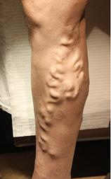
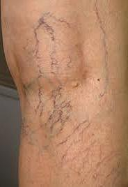
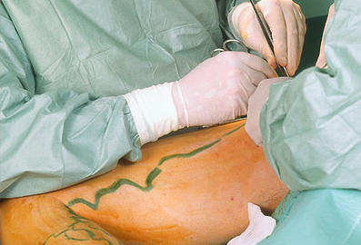
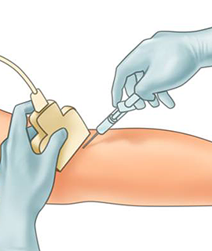
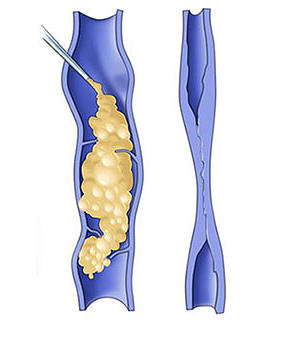
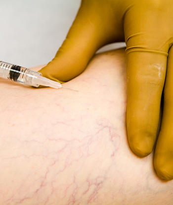
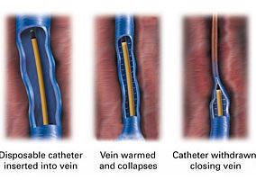

JLSC
Jordan Laser Surgical Center
مركز الأردن لجراحة الليزر
Varicose Veins and Spider Veins
Varicose veins are gnarled, enlarged veins. The veins most commonly affected are those in your legs and feet. Reticular and Spider veins are a common mild variation of vericose veins.
In many cases, Reticular varicose veins and spider veins are simply a cosmetic concern. In other cases, varicose veins can cause aching pain and discomfort. Sometimes varicose veins lead to more serious problems. Treatment may involve self-care measures or procedures by your doctor to close or remove veins
What are Vericose Veins?

Varicose (VAR-i-kos) veins are enlarged veins that can be blue, red, or flesh-colored. They often look like cords and appear twisted and bulging. They can be swollen and raised above the surface of the skin. Varicose veins are often found on the thighs, backs of the calves, or the inside of the leg.
While varicose veins are similar to spider veins, the two are separate medical conditions. Varicose veins are considered a more severe form of venous insufficiency than spider veins.
Varicose veins are caused by weak and damaged valves within the blood vessels that are unable to properly push blood back to the heart. When the valves become weak, blood can flow backwards through the veins and pool in the legs.
Varicose veins often develop as a result of standing or sitting for prolonged periods of time, like during travel or work.
A number of other factors will also increase your risk of developing varicose veins, such as:
- Age
- Family history of venous insufficiency
- Hormonal changes, like menopause
- Pregnancy
- Obesity
- Increased sun exposure
Varicose veins are often accompanied by a collection of symptoms and can become painful if left untreated.
Symptoms of varicose veins include:
- Mild to severe pain
- Throbbing
- Cramping
- Swelling
- Heaviness
- Rash or other form of skin irritation
- Restless legs syndrome
- Darkening of the skin
These symptoms will develop at the site of varicose veins and can grow more severe over time. If left untreated, varicose veins can increase your risk for deep vein thrombosis, blood clots, bleeding and skin ulcers.
What are Spider Veins?
Spider veins are like varicose veins but smaller. They also are closer to the surface of the skin than varicose veins. They can look like tree branches or spiderwebs with their short, jagged lines. They can be found on the legs and face and can cover either a very small or very large area of skin.
This condition can affect blood circulation in any of the body’s extremities, but is most common in the legs. The condition is also known as venulectasias or telangiectasia and affects about 30 percent of the adult population, mostly women.
There are a number of factors that increase your risk of developing spider veins, including:
- Family history of venous insufficiency
- Pregnancy
- Hormonal changes, such as menopause
- Being over the age of 50
- Obesity
- Standing or sitting for extended periods of time
- Increased sun exposure
- Skin injuries
Unlike varicose veins, spider veins do not bulge above the surface of the skin. The discolored veins may appear faint or bold and are generally purple, blue or red in color.
Physical symptoms with spider veins are rare, but may include:
- Mild pain
- Heaviness
- Tingling
If these symptoms develop they will occur in the area surrounding the discolored skin. The symptoms of spider veins often worsen after extended periods of standing or sitting.
Should I see a doctor about Vericose Veins and Spider Veins?

Reticular V.V
- The vein has become swollen, red, or very tender or warm to the touch
- There are sores or a rash on the leg or near the ankle
- The skin on the ankle and calf becomes thick and changes color
- One of the varicose veins begins to bleed
- Your leg symptoms are interfering with daily activities
- The appearance of the veins is causing you distress
If you’re having pain, even if it’s just a dull ache, don’t hesitate to get help. Visit our centre at JLSC to get diagnosed and Dr Ibrahim will provide with the most suitable treatment for your condition.
There are so many types of varicose veins and spider veins
Here you can see some examples to them:
It is very important to be subjected to a right assesment in order to choose the right treatment method for your case .
This assessment will consist of:
the duplex ultrasound is a machine uses sound waves to give pictures of the blood vessels and the direction blood is flowing .It allows the doctor to see exactly what is going on in the deep and surface veins and shows any blood flowing back down the veins in an abnormal way. Duplex scanning has replaced older tests for veins. It provides a detailed map of the veins and allows more accurate planning of treatment.
A duplex scan takes about 30 minutes per leg. The procedure is painless and has no side effects.Surgical procedures
Surgery works by removing the abnormal varicose veins completely so that blood cannot flow through them in an abnormal direction
Surgery is intended to deal with the major site of reflux and the larger varicosities. Small residual veins and spider veins are best treated with sclerotherapy at a later date . Ablated veins through previous laser approches are also a good candidate.

Ambulatory Phlebectomy
Phlebectomy is a minimally invasive surgical technique to remove abnormal medium to large veins. Your leg will be evaluated using ultrasound and the vein will be marked using a skin marker. You will receive local anesthesia at the incision site to numb the entire area. Using a special set of tools, the physician makes tiny incisions in the skin to remove the affected veins. Incisions are so tiny that stitches are not required. Once the diseased vein is removed, other healthy veins take over to empty blood from your legs. As normal blood flow is re-established, your symptoms should improve noticeably.
Phlebectomy offers permanent vein removal with virtually no skin discoloration or ulcers.

Vein Stripping
This procedure involves removing a long vein through small incisions. This is an inpatient procedure for most people. You will receive general anesthesia . Removing the vein won't adversely affect circulation in your leg because veins deeper in the leg take care of the larger volumes of blood.
Things you need to know
If you are going home on the day of surgery you will not be able to drive yourself and will need to have a responsible adult to transport you and to stay with you overnight.You will not be able to drive safely for about 5 – 7 days depending on the extent of surgery.Most people are up and about by the next day and fit to return to work within a few days.If work involves a lot of standing or physical activity you are best to have 10-14 days off.Expect to return to all sporting and vigorous activities within about 6 weeks.You may have some tenderness and discomfort that lasts for several weeks.It's normal for the cuts in your leg to feel bruised and sore.Scarring is generally minimal.
Sclerotherapy
Sclerotherapy is a safe medical procedure with minimal invasion, and almost always effective for treating and eliminating varicose veins and Reticular veins.
The Procedure
Sclerotherapy uses tiny needles to inject a liquid or foam chemical agent (generally a salt solution) directly into the visible surface veins. The solution irritates the lining of the blood vessel, causing it to swell and stick together, and the blood to clot causing the treated veins to shrink and collapse over time. Multiple sessions are often required for full results, but once the veins are gone, they will not reappear.
Candidates for Sclerotherapy
Prior to sclerotherapy, you will have an initial consultation with Dr. Ibrahim Ja'afreh who will decide if you're a good candidate for the procedure. You are not eligible if you are pregnant but certain precautions might be needed to control the problem. Veins that are potentially usable for future heart bypass surgery will generally not be considered for sclerotherapy, unless they are already deemed unusable.

What to Do Before Sclerotherapy
Prior to sclerotherapy, you should avoid certain medications. Talk to your doctor about all medicines (including over-the-counter drugs, herbs, and dietary supplements) you are taking. If you need to take an antibiotic before sclerotherapy, contact your doctor. No lotion should be applied to the legs before the procedure. Some doctors recommend avoiding aspirin, ibuprofen (such as Advil, Motrin, and Nuprin) or other anti-inflammatory drugs for 48-72 hours before sclerotherapy. Tylenol, however, should not affect this procedure.
Thing to be expected
Generally ,it is an easy painless procedure but you may experience mild discomfort and cramping for one to two minutes, especially when larger veins are injected. The procedure itself takes approximately 30 minutes. The number of veins injected in one session varies, and depends on the size and location of the veins, as well as the general medical condition of the patient. You will need to wear compression stockings following the procedure and will be asked not to participate in aerobic activity for a few days, though walking is encouraged.

Side Effects of Sclerotherapy
You may experience certain side effects after sclerotherapy. There are milder effects, such as itching, which can last for one or two days after the procedure. Also, you may experience raised, red areas at the injection site. These should disappear within a few days. Bruising may also occur around the injection side and can last several days or weeks.
Other Sclerotherapy Side Effects Include:
Endovenous Laser Treatment
Endovenous Laser Treatment is suitable for treatment of larger varicose veins.It is an innovative non-surgical procedure, that uses laser vein treatments to seal the problem

The procedure
is performed with the patient lying on a treatment couch. The vein is numbed using injection of local anaesthetic. A laser fibre is subsequently put into the centre of the vein guided into place using ultrasound which result in heating the inside of the vein which seals the vein walls together. This is followed by Ultrasound Guided Sclerotherapy to treat any residual varicose veins. The procedure usually takes 60 minutes.
Compression
Following each treatment session you will be required to wear a special compression stocking to assist the sealing off of the treated veins. The stocking will need to be worn continuously for 3-4 days. It will need to be worn for another 7-10 days, but during this time it may be taken off for showers or baths and in bed at night. Daily walking for 45-60 minutes is necessary while wearing the stocking.
Side Effects
from Standard Sclerotherapy, Ultrasound Guided Sclerotherapy and Endovenous Laser Treatment: The procedure is very safe if done properly with rare minimal side effects.
What to expect
You can then return to your usual activities with minimal discomfort. You may feel a slight “pulling” sensation along the treated vein for a few days. For best results, we do recommend wearing compression stockings during the day for the first week following treatment. The non-invasive laser procedure has been proven up to 98% effective, with rare cases of reoccurrence.
Laser Therapy
Laser therapy and intense light pulse (ILP) destroys tiny spider veins and small varicose veins with heat. The heat causes scar tissue to form, which eventually closes off the vein. For some patients, this is an appealing alternative to injections. Side effects may include Temporary minor discomfort in the treated area, skin discoloration, and the formation of blisters.
You can find different types of laser therapy for varicose veins and spider veins which include:
 Facebook
Facebook LinkedInIn
LinkedInIn Jeeran
Jeeran